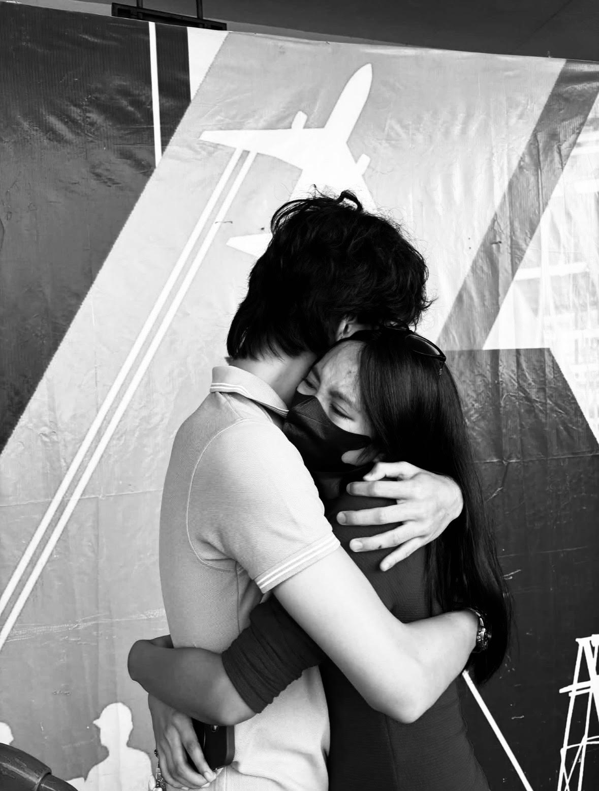
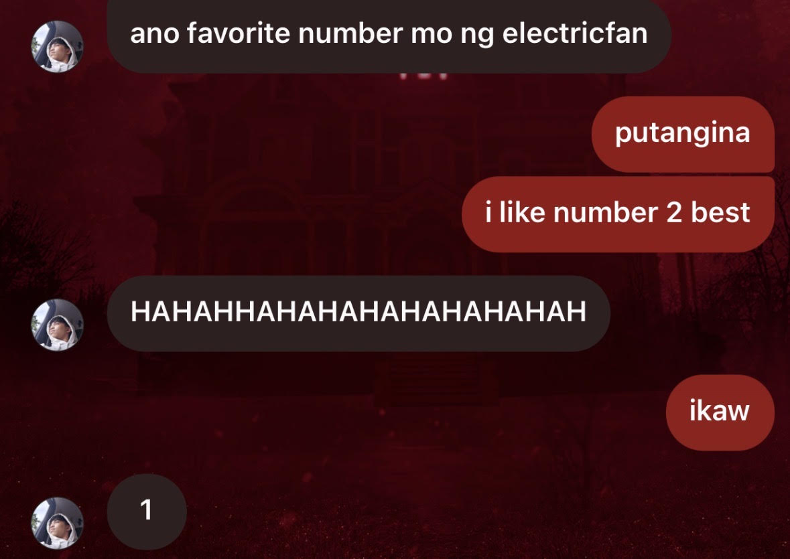

MEMORY: 3 OF 3
TYPE: SECRET
XP: +25
SECRET DROP
Rare item discovered
This was hidden behind the third door because every game needs a rare item worth finding.
CLAIM SECRET REWARD

Legendary reward:
You were, and still are, someone I feel grateful to have known
so closely. Thank you for all the moments that became part of me. You've become a part of my past, present, and future, I'd rather not imagine what it would be like if I give up on us now and regret not being a better partner for you. So I'm still dedicated in sharing my life with the person I see myself growing old with, I'll never make the mistake of letting you go ever again cause I am not ready to face the consequences of it. You won't catch me lacking no more.
SS+ TIER DROP

0.00001% Drop Rate: I loved how silly and stupid this topic was. Why? Because it showed that you just wanted to talk to me no matter what we'd be talking about. The fact you'd go out of your way to ask me what my favorite number in the electric fan is made my heart flutter and do backflips, I don't really know why I feel that way to be honest but I will never get tired of telling other people about this convo.
BONUS ITEM: ONE SMALL SMILE
If these doors were able to make you smile and look back to one of our greatest memories throughout our 3 year and 8 month period, then this quest has succesfully been completed.